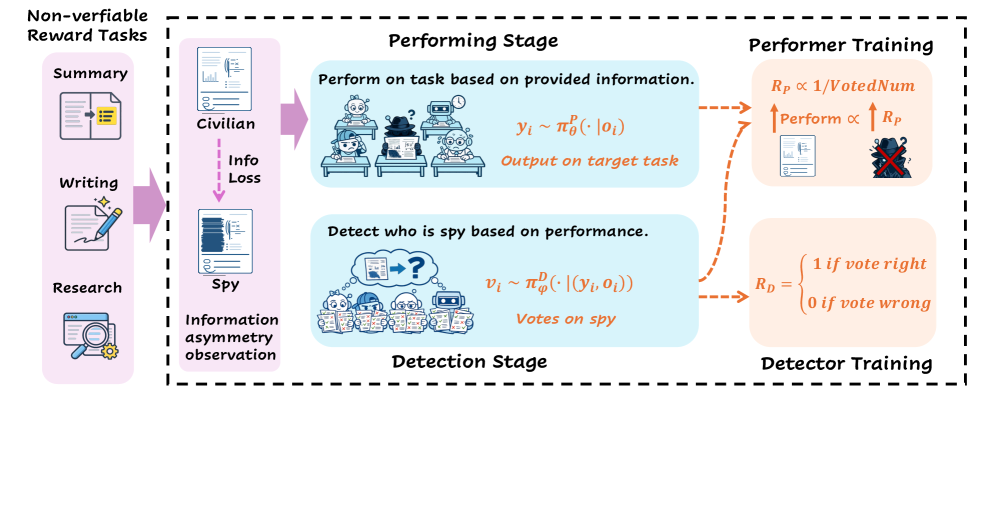
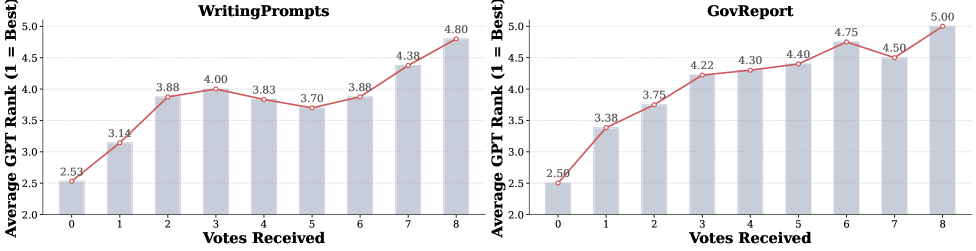

RLSVR: Task Transformation Induces Self-Verifiable Rewards (SpyRL)
TL;DR
- "From RLVR to RLSVR: Task Transformation Induces Self-Verifiable Rewards for Open-Ended LLM Self-Improvement" (arXiv 2607.23802; Qinsi Wang et al., Duke / Adobe / Oregon State / Penn State / NUS / Amazon) extends RLVR to open-ended tasks by borrowing self-supervised learning's trick: don't approximate the missing quality label — transform the task into a proxy environment that generates a verifiable label by construction.
- The instantiation, SpyRL, turns summarization / writing / math into a "Who Is the Spy?" game: civilians see the full input, one spy sees a degraded version, all perform the same task, then everyone votes on who the spy is. The spy identity is environment-assigned, so voting accuracy is exactly verifiable — and getting voted out correlates with producing the worst output, converting unobservable quality into a rule-based reward.
- No reward model, no LLM judge, no human labels. On Qwen3-8B, SpyRL wins 75.4% / 77.3% pairwise on summarization / writing; on Qwen3-4B math it lifts AIME25 from 6.7 to 20.0 and GPQA-D from 26.3 to 41.3 — beating self-play baselines R-Zero and Absolute Zero on both open-ended and verifiable tasks, and matching a GPT-4o rubric-judge that cost ~$900 in verifier calls.
Why this matters
RLVR is the engine behind the reasoning-model era, but it only turns when correctness is deterministically checkable — math answers, unit tests. The moment the objective is "a good summary" or "a compelling story," the field falls back on reward models, LLM-as-judge, or RLHF, and every one of those reintroduces the problems RLVR escaped: evaluation bias, a capability ceiling at the judge's competence, and inference cost on every single rollout. This tracker's RL thread keeps running into the same wall from different angles — rubric-generated feedback as privileged information, reward-hacking fixes in GLM-5.2, contrastive belief updates for measuring reward-seeking. The unsolved core is: where does a trustworthy reward come from when there's no ground truth?
RLSVR's answer is a genuine reframing. Instead of building a better approximate judge for the unverifiable quality function \(Q\), it changes the task so a real verifier exists. This is exactly what self-supervised learning did for representation learning — masked-token recovery isn't the task you care about, but its labels come free from the data, and solving it induces the capability you want. RLSVR ports that move from supervised labels to RL rewards. If it holds up, it's a path to scaling RL self-improvement into creative and open-ended domains without a human or a frontier judge in the loop — the same "self-improvement without external supervision" ambition as Absolute Zero and R-Zero, but without their dependence on an underlying verifiable task.
The core idea

Figure 2 from the paper: SpyRL's two stages. In the performing stage, civilians observe full information while the spy gets a degraded version; all produce public outputs. In the detection stage, players vote on the spy. The performing reward is inversely proportional to suspicion votes received; the detection reward is deterministically verifiable against the known spy identity.
RLVR optimizes \(\max_{\theta}\;\mathbb{E}_{x,\,y\sim\pi_{\theta}}[V(x,y)]\) where \(V\in\{0,1\}\) is a deterministic verifier. It scales because \(V\) is unbiased, unlimited, and essentially free. For open-ended tasks the true objective is a latent quality \(Q(x,y)\) with no verifier, and prior work substitutes an approximate \(\hat V\) — reintroducing bias, a capability cap, and per-rollout cost.
RLSVR's move: a task transformation \(\Phi\) maps \((\mathcal{D},\tau)\) to a proxy environment \(\mathcal{E}\) with four steps: (1) latent-variable injection — sample input \(x\) and a hidden variable \(z\), record \(z\) as ground truth (never revealed to the policy); (2) conditioned task execution — build observations from \((x,z)\) and have the policy do the original task on them, so the exercised capability stays on-target; (3) verifiable interaction — pose a question about \(z\) answerable only from the task outputs, designed so that answering correctly hinges on output quality; (4) rule-based reward — check the interaction outcome against the recorded \(z\). The reward is self-verifiable: a deterministic function of the environment-assigned \(z\), needing no annotation, reward model, or judge. \(\Phi\) plays the role of SSL's pretext task, \(z\) the automatically generated label, and standard GRPO machinery applies with \(R\) replacing the unverifiable \(Q\).
How it works
SpyRL instantiates \(\Phi\) as the social-deduction game. The latent \(z\) is the spy's identity; the "question about \(z\)" is "who is the spy?"; and the design ties spotting the spy to spotting the worst output.
Performing stage (information asymmetry). Sample instance \(x\) and spy index \(u\sim\mathrm{Unif}\{1,\dots,n\}\). Each player \(i\) gets observation \(o_i = x\) if \(i\ne u\), else \(g(x)\), where \(g\) is an information-degradation operator (continuous span masking for summarization/writing, partial context removal for math). Crucially \(g\) hides only task-critical content while preserving style, length, and theme — so detectors can't win on surface cues. Each player produces \(y_i\sim\pi^{P}_{\theta}(\cdot\mid o_i,\tau)\) on the same target task. To avoid being fingered as the spy, players are pushed to perform at their best — and "best" is defined relative to peers under the same information, which drives continual self-evolution.
Detection stage (verifiable reward). Every player sees all outputs \(Y=\{y_1,\dots,y_n\}\) and votes \(v_i\in\{1,\dots,n\}\). Since the spy identity \(u\) is known to the environment, the detector reward is exactly checkable: \(r_i^{D}=\mathbb{I}[v_i=u]\), normalized GRPO-style within the group:
Zero-sum performing reward. Performers are rewarded by not being suspected, with a zero-sum structure between spy and civilians:
where \(m_j\) is the votes received by player \(j\) and \(\bar m_c\) the civilians' average. The two terms encode: (1) zero-sum spy-vs-civilian competition (\(r_u^P + \sum_j r_{c_j}^P = 0\)), enabling continual co-evolution; (2) within-civilian competition — a civilian voted-out more than its peers is penalized, making the signal fundamentally relative ("be better than the others under the same information") rather than an absolute quality score. Because information asymmetry skews the raw reward distributions across roles, Role-Advantage Estimation calibrates the spy-vs-civilian baseline before advantage computation.
Coupled, alternating optimization. The two stages are mutually dependent — detection votes define the performing reward; performer quality sets detection difficulty. Training strictly alternates (freeze one stage, update the other, swap), which prevents the policy and its evaluator from moving simultaneously and breaks the policy stagnation of fixed self-play. Both use GRPO-style clipped objectives with KL regularization to a reference policy.
# SpyRL training epoch (n players, spy index u)
for t in 1..T:
x ~ D; u ~ Uniform(1..n) # latent z = spy identity
# --- Performing stage ---
for i in 1..n:
o_i = x if i != u else g(x) # civilians full; spy degraded
y_i ~ π_perform(· | o_i, τ) # ALL do the real target task
# --- Detection stage ---
Y = {y_1..y_n}
for i in 1..n:
v_i ~ π_detect(· | (o_i, Y)) # vote on who is the spy
# --- Rewards ---
r^D_i = 1[v_i == u] # VERIFIABLE (z is known)
m_j = count(v_i == j) # suspicion votes per player
r^P_u = -β(m_u - mean_civilian_votes) # zero-sum performing reward
r^P_c = (β/n_c)(m_u - m̄_c) - λ(m_c - m̄_c)
A^P = RoleAdvantageEstimation(r^P, role) # calibrate asymmetry bias
# alternate: update π_perform OR π_detect this epoch (GRPO + KL), then swap
Results
Base models Qwen3-4B / 8B, group size \(n=5\), 100 epochs; masking 20% (summarization/writing) and 40% (math). Baselines: R-Zero and Absolute Zero (proposer–solver self-play).
- Summarization (ROUGE-L, GovReport): SpyRL 36.7 vs Absolute Zero 33.2 vs base 30.2 (Qwen3-4B); best on all five benchmarks and both backbones, winning the pairwise A/B in all 30 cells.
- Creative writing (GPT-4o pairwise win rate, Qwen3-8B): 76.5% overall vs base, leading every fine-grained dimension against both baselines; largest margins in novelty and emotion.
- Math + reasoning (Qwen3-4B): GSM8K 84.5→93.4, Math500 68.2→79.5, AIME24 10.3→13.3, AIME25 6.7→20.0, MMLU-Pro 51.6→57.4, GPQA-D 26.3→41.3 — best on all seven, biggest gains on the hardest (AIME25, GPQA-D). So the "spy game" reward improves verifiable reasoning too, not just open-ended tasks.
- Reward validity (the load-bearing check): over 100 games, suspicion votes received correlate positively with GPT-4o's quality rank (1=best) — more votes ⇒ worse output. The rule-based reward tracks true quality without any external verifier.

Figure 4 from the paper: across 100 games, the number of suspicion votes a player receives rises with its (worse) GPT-4o quality rank — confirming the vote-based reward aligns with actual output quality with no external verifier. - Human eval: 10 PhD students, 400 prompts — SpyRL beats base/R-Zero/Absolute Zero at 80.0% / 78.5% / 74.0% overall on WritingPrompts, confirming the LLM-judged gains. - Cost vs rubric judges: SpyRL beats a Qwen3.5-27B rubric-as-reward baseline (~\(200 verifier cost) across all dimensions and stays competitive with a GPT-4o rubric judge (~\)900) — while spending $0 on verification. - Ablations: full two-stage coupling reaches Math500 79.5 vs 72.3 "only performing," 69.2 "only detection," 71.6 "without spy" (no asymmetry) — the coupled game, not any single piece, drives the gain. Group size sweet spot is \(n=5\) (mean gain 5.5→9.3 from n=3→5, diminishing after). Summarization↔writing transfer positively; math doesn't transfer to writing.
How it connects
- RLVR for Code Optimization and ISO: An RLVR-Native Optimization Stack — RLSVR is the "what if there's no verifier?" complement to this tracker's RLVR-native work; it manufactures the verifier by construction.
- Rubric-Generated Feedback as Privileged Information and Co-Evolving Evaluation Criteria — the alternatives RLSVR is arguing against (and beats on cost): approximate the judge vs eliminate it via task transformation.
- Qwen Skill Self-Play and Multi-Agent Exploration: Why Teams of LLMs Under-Explore — SpyRL is a self-play method whose group structure (5 players, collective voting) is exactly the diversity/anti-collapse mechanism those papers care about; the zero-sum + within-group competition is its answer to policy stagnation.
- GLM-5.2's Reward-Hacking Fix — a verifiable-by-construction reward is harder to hack than a learned judge, but SpyRL introduces its own hackable surface (see critical take).
- From RLVR to RLSVR shares the "self-improvement without external supervision" goal with AREX, Recursive Harness Self-Improvement, and the self-improvement survey — but operates at the reward-signal level rather than the harness level.
Critical take
The idea is elegant and the "task transformation, not judge approximation" framing is the kind of reframe that spawns follow-ups — but the verifiability is subtler than the headline suggests. Only the detection reward is truly verifiable (\(z\) is known); the performing reward is still produced by the detectors' votes, i.e. by the model judging itself, just laundered through a game. The whole thing rests on one empirical correlation — Figure 4's "more votes ⇒ worse output" — and if the policy learns to be deceptive rather than good (write a fluent-but-empty summary that dodges suspicion), the reward rewards the wrong thing; the paper's zero-sum design fights this but doesn't prove it away. The gains also lean on the information-degradation operator \(g\) preserving style while hiding substance, which is doable for span-masking but may not generalize to tasks where "quality" isn't about information completeness (humor, tone, aesthetic risk). And it's all Qwen3-4B/8B at 2048-token generations against two self-play baselines — no frontier-scale runs, and ROUGE-L is a weak summarization metric to lead with even alongside A/B tests. The most convincing evidence is actually the math transfer (AIME25 6.7→20.0): a reward built for open-ended tasks improving verifiable reasoning suggests the group-competition signal is doing something real beyond the specific game. Worth watching whether the community can break it with a reward-hacking policy, which is usually the fastest way to learn how robust a "verifiable-by-construction" reward really is.
If you remember three things
- The reframe: don't build a better approximate judge for unverifiable quality — transform the task into a proxy environment that emits a verifiable label by construction. RLSVR is self-supervised learning's pretext-task trick, ported from labels to RL rewards.
- The mechanism: information asymmetry (spy sees a degraded input) + identity voting converts "which output is best?" (unverifiable) into "who is the spy?" (exactly checkable, since the environment assigned it), with a zero-sum reward that makes quality a relative target among peers.
- The surprise: a reward designed for summarization and creative writing also improves verifiable math and science reasoning (AIME25 6.7→20.0, GPQA-D 26.3→41.3), and matches a $900 GPT-4o rubric judge at zero verifier cost — evidence the group-competition signal generalizes beyond open-ended domains.